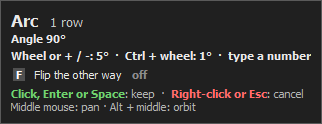

Tools / Arc
Arc
Bend a selected row into an arc between its ends.
What it does
Arc bends the selected row of vertices or edges into a circular arc between its two ends. You set how far it bends with an angle.
How to use it
- Select the vertices, edges or borders you want to change (a row of them).
- In the right-click menu, choose Arc (it is in the group with Connect). It only shows at vertex, edge and border level.
- Use the mouse wheel or + / - to change the angle (5 degrees a step), or type a number.
- Click, Enter or Space keeps it. Right-click or Esc cancels.

Options
| Key | Option | What it does |
|---|---|---|
| F | Flip | Bends the arc the other way. |
Ctrl + wheel changes the angle by 1 degree. The viewport can still be moved while the tool runs: middle mouse pans, Alt+middle orbits, the wheel zooms.
Good to know
- Closed rows and rows that are too short are skipped, and the box tells you how many.
- Only the positions of vertices change.
- Undo is one step.